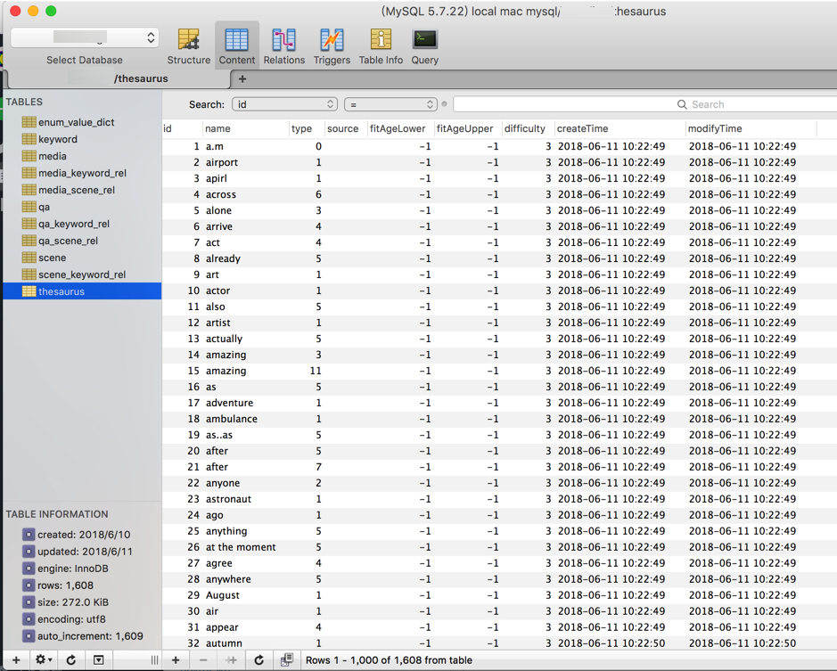
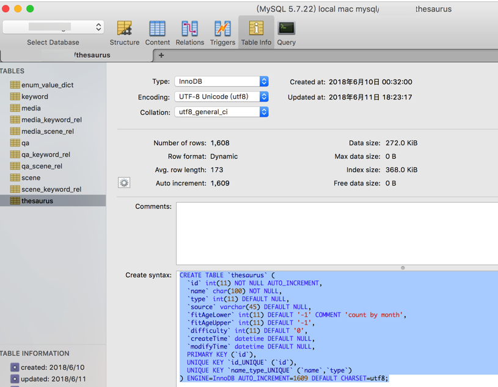

MySQL心得
create table的sql语句中，注意新建表时，去掉AUTO_INCREMENT=xxx
对于一个mysql的某个表，本地已经调试完毕，插入了很多数据（1608条）：

需要在在线数据库中新建该表，然后就参考了table info中的sql语句：
CREATE TABLE `thesaurus` (
`id` int(11) NOT NULL AUTO_INCREMENT,
`name` char(100) NOT NULL,
`type` int(11) DEFAULT NULL,
`source` varchar(45) DEFAULT NULL,
`fitAgeLower` int(11) DEFAULT '-1' COMMENT 'count by month',
`fitAgeUpper` int(11) DEFAULT '-1',
`difficulty` int(11) DEFAULT '0',
`createTime` datetime DEFAULT NULL,
`modifyTime` datetime DEFAULT NULL,
PRIMARY KEY (`id`),
UNIQUE KEY `id_UNIQUE` (`id`),
UNIQUE KEY `name_type_UNIQUE` (`name`,`type`)
) ENGINE=InnoDB AUTO_INCREMENT=1609 DEFAULT CHARSET=utf8;

然后去粘贴到在线sql命令行中去创建：

然后才注意到，其实此处不应该加上那个：
AUTO_INCREMENT=1609
-> 否则新建的表的后续插入的值的id，都是从1609开始了。。
->所以应该去掉AUTO_INCREMENT=1609：
CREATE TABLE `thesaurus` (
`id` int(11) NOT NULL AUTO_INCREMENT,
`name` char(100) NOT NULL,
`type` int(11) DEFAULT NULL,
`source` varchar(45) DEFAULT NULL,
`fitAgeLower` int(11) DEFAULT '-1' COMMENT 'count by month',
`fitAgeUpper` int(11) DEFAULT '-1',
`difficulty` int(11) DEFAULT '0',
`createTime` datetime DEFAULT NULL,
`modifyTime` datetime DEFAULT NULL,
PRIMARY KEY (`id`),
UNIQUE KEY `id_UNIQUE` (`id`),
UNIQUE KEY `name_type_UNIQUE` (`name`,`type`)
) ENGINE=InnoDB DEFAULT CHARSET=utf8;
-> 这样新插入的值，id才是从1开始的
用mysql保存枚举类型的字符串的值
- 为了（以后数据量大时的性能考虑），建议用
int保存 - 为了简单方便好用，可以用
ENUM保存
Python操作mysql
Error 1064 You have an error in your SQL syntax
有时候会insert会遇到语法错误：
Error 1064 You have an error in your SQL syntax
其中一种解决办法是：
字符串的如何扩起来，包裹起来，去保存：
- 用
单引号=' - 还是
双引号="
最常见的做法是：
'contain single quote inside sql use double single quote: \'xxx '
相关的，能正常运行的Python代码：
dialogA = dialogAB[0]
dialogB = dialogAB[1]
dialogA = dialogA.replace("'", "''")
dialogB = dialogB.replace("'", "''")
if len(dialogA) > 0 and len(dialogB) > 0:
#insertMediaSql = "INSERT INTO qa(id,question,answer,createTime,modifyTime,source) VALUES(%d,'%s','%s','%s','%s',%d)"
insertMediaSql = """
INSERT INTO qa(`id`,`question`,`answer`,`createTime`,`modifyTime`,`source`)
VALUES(%d,'%s','%s','%s','%s',%d)"""
qaid = curId
executeSql = insertMediaSql % (qaid, dialogA, dialogB, now, now, 0)
mysql的命令行
会自动重连
在mysql的console命令行中，（由于超时等原因）断开🔗后，直接输入命令，会自动重连，然后再执行命令：
mysql> SELECT * FROM keyword WHERE type="topic" AND name="american football";
ERROR 2006 (HY000): MySQL server has gone away
No connection. Trying to reconnect...
Connection id: 2109
Current database: xxx
+------+-------------------+-------+---------------------+------------+
| id | name | type | createTime | modifyTime |
+------+-------------------+-------+---------------------+------------+
| 7423 | american football | topic | 2018-07-05 15:38:20 | NULL |
+------+-------------------+-------+---------------------+------------+
1 row in set (0.20 sec)
mysql>
给数据库改名
mysqldump -u username -p -v olddatabase > olddbdump.sql
mysqladmin -u username -p create newdatabase
mysql -u username -p newdatabase < olddbdump.sql
清空某个表的数据内容
| delete | truncate | |
|---|---|---|
| 语法 | delete from 表名; |
truncate table 表名; |
| 返回值 | 被删除的记录数 | 0 |
| 作用解释 | 不带where参数的delete语句可以删除mysql表中所有内容 | 也可以清空mysql表中所有内容 |
| 过程/效果 | 所有记录一条一条删除到删完 | 相当于保留mysql表的结构，重新创建了这个表 -》 相当于新表 |
| 速度/效率 | 慢 | 相对快一些 |
| 日志 | 有日志记录-〉允许Rollback回滚操作 | truncate删除后不记录mysql日志 -> 不可以恢复数据 |
| 其他说明 | 支持加上WHERE参数，删除特定内容：delete FROM table1 WHERE your_condition; |
|
| 结论 | 想要删除部分内容时，选delete 想要有日志记录时，选delete |
想要速度快，相当于直接清空某个表时，选truncate |